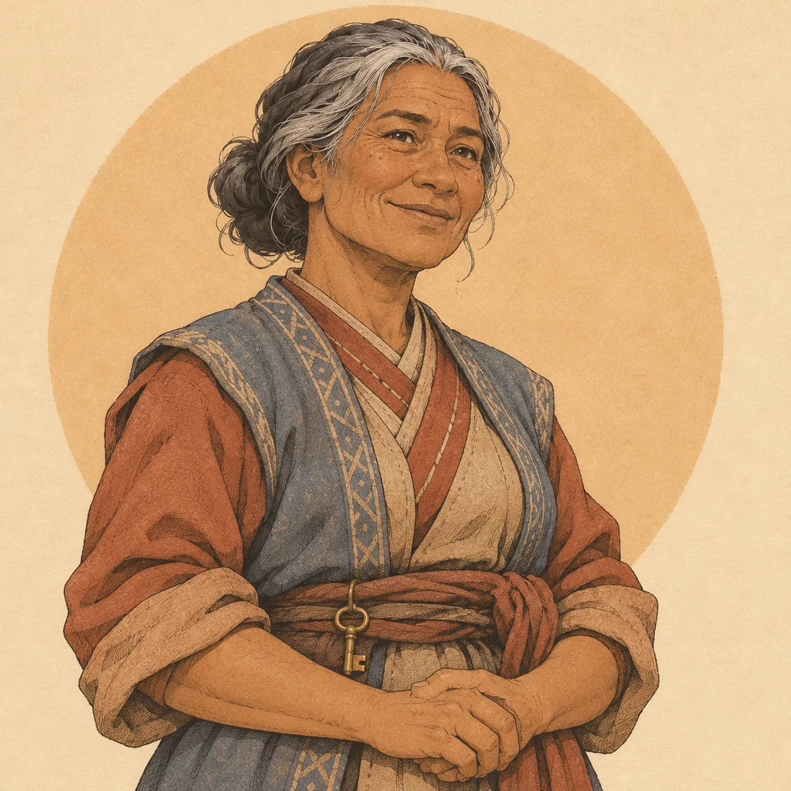
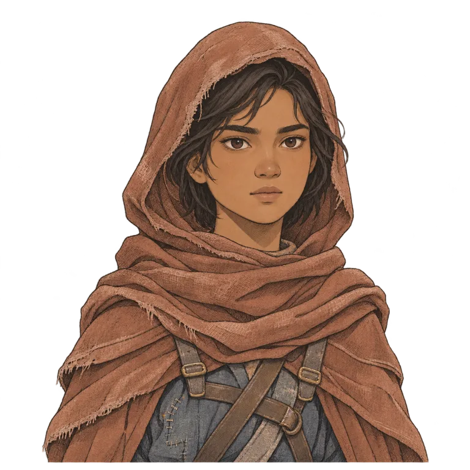
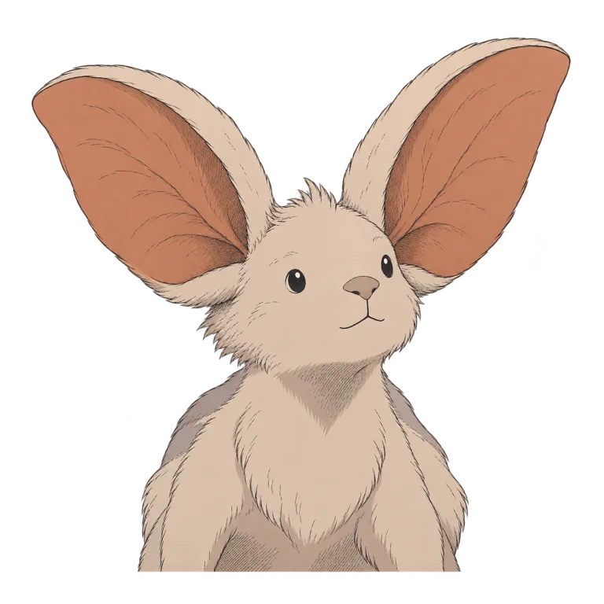

KARTOGRAFI EKSPEDISI / LEMBAH PASIR
Peta Wilayah
LEMBAH PASIR 1 : perjalanan
Menyusuri Tanah Sada…
Menyiapkan duniaCATATAN SEORANG KURIR · BAB 0
Supaya tak ada orang
yang menunggu sendirian.
Bab 0 — Pos Batu Biru.
Tiga tugas kurir. Satu Surat Penyalaan yang belum padam.
Temui Maren

KARTOGRAFI EKSPEDISI / LEMBAH PASIR
IKATAN PENGANTAR / KOMPENDIUM BAB 0
Kepercayaan tumbuh dari surat yang sampai dan jalan yang kamu buka.
Catatan jalur Tanah Sada · Tahun 100 Telan (TS 501). Pos Batu Biru di Lembah Pasir menjadi panggung Bab 0; Dusun Sela, Padang Salkara, dan wilayah bangsa lain menunggu pada Bab 1–5.
Bekal perjalanan.
Jaga barang, kenali pijakan.

NARA & RURU
Jubah Layar selalu dikenakan. Tahan Spasi saat turun untuk melayang. Ruru membaca medan di sekitarmu dengan Q.

SEJENAK DI JALAN
Perjalanan disimpan otomatis di perangkat ini.
BEKAL PERJALANAN
W A S DBerjalan
ShiftBerlari
SpasiLompat / tahan untuk glide
MouseLihat sekeliling · klik dunia untuk mengunci
EBicara, periksa, panjat & pasang tangga
QRuru memindai medan & kontur
TabBuka Buku Jalur (Kompendium / Quest / Gear)
MBuka Peta Wilayah
EscJeda / tutup menu
Pasir memperlambat langkah. Tebing curam perlu jalan lain atau alat. Dalam badai, jubah lebih cepat kehilangan daya angkat. Paket yang tergores tetap bisa diantar.
BAB 0 SELESAI · JALAN MENUJU DUSUN SELA
Roti dan lagu telah sampai. Kiriman yang tertahan telah dilaporkan.
Dua jejak berbeda kini tercatat dalam Buku Jalur. Surat tetap bersegel dan dibawa menuju Dusun Sela. Perjalanan Bab 1 belum tersedia dalam build ini.